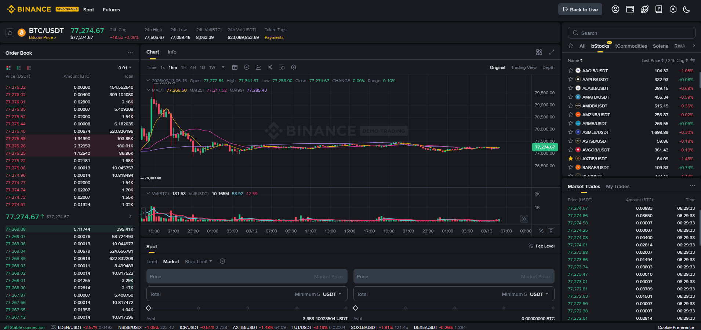

Spot Trading آپ کا پہلا اور سب سے اہم قدم ہے — یہاں آپ براہ راست کرپٹو خریدتے اور فروخت کرتے ہیں، بغیر قرض، بغیر لیوریج، صرف اپنے پیسے سے۔ یہ وہ بنیاد ہے جس پر پوری ٹریڈنگ کی عمارت کھڑی ہے۔
Spot Trading = براہ راست کرپٹو کی خرید و فروخت۔ جو قیمت آپ دیکھتے ہیں، وہی ادا کرتے ہیں — کوئی قرض نہیں، کوئی لیوریج نہیں، کوئی مستقبل کا کنٹریکٹ نہیں۔ خریدا ہوا کوائن حقیقی طور پر آپ کی ملکیت بن جاتا ہے۔
آپ BTC/USDT چارٹ دیکھتے ہیں — فرضی قیمت $96,000
آپ فیصلہ کرتے ہیں: 0.01 BTC خریدیں گے
آپ $960 ادا کرتے ہیں (تقریباً)
اب آپ کے Spot وولیٹ میں 0.01 BTC حقیقی موجود ہے
جب قیمت $100,000 ہوگی اور آپ فروخت کریں گے:
منافع = ($100,000 − $96,000) × 0.01 = $40 (فیس سے پہلے)| پہلو | Spot | Futures |
|---|---|---|
| قرض | ❌ نہیں | ⚠️ لیوریج |
| لیوریج | ❌ نہیں | ✅ 1x-125x |
| میعاد (Expiry) | ❌ نہیں | Perpetual/Delivery |
| ملکیت | ✅ کوائن حقیقی طور پر آپ کا | ❌ کنٹریکٹ |
| رسک | صرف آپ کا سرمایہ | لیکویڈیشن کا خطرہ |
| Short سیل | ❌ نہیں | ✅ ممکن |
| موزوں | مبتدی اور تمام سطحیں | تجربہ کار |
💡 Spot کی سب سے بڑی طاقت: آپ حقیقی کوائن رکھتے ہیں۔ اگر مارکیٹ گر بھی جائے، تو آپ کا کوائن نہیں مٹتا — آپ اسے اگلے بلند بازار میں فروخت کر سکتے ہیں۔ Futures میں لیکویڈیشن آپ کا سب کچھ لے سکتی ہے۔
Trading Pair دو کرنسیوں کا جوڑا ہے — آپ ایک کرنسی سے دوسری خریدتے یا فروخت کرتے ہیں۔
BTC/USDT = BTC خریدیں، USDT ادا کریں
ETH/USDT = ETH خریدیں، USDT ادا کریں
BNB/USDT = BNB خریدیں، USDT ادا کریں
BTC/ETH = BTC خریدیں، ETH ادا کریں| حصہ | نام | مثال | مطلب |
|---|---|---|---|
| Base | بنیادی کرنسی | BTC | جو آپ خرید/فروخت کر رہے ہیں |
| Quote | حوالہ کرنسی | USDT | جس میں قیمت دکھائی دیتی ہے |
| Rate | قیمت | 1 BTC = 96,000 USDT | Base کی قیمت Quote میں |
BUY BTC/USDT → USDT دیتے ہیں، BTC لیتے ہیں
SELL BTC/USDT → BTC دیتے ہیں، USDT لیتے ہیں💡 یاد رکھیں: Buy/Sell ہمیشہ Base کرنسی کے لحاظ سے ہوتا ہے۔ BTC/USDT میں "Buy" کا مطلب BTC خریدنا ہے۔
| جوڑا | لیکویڈیٹی | کس کے لیے |
|---|---|---|
| BTC/USDT | سب سے زیادہ | پہلا اور سب سے محفوظ انتخاب |
| ETH/USDT | بہت زیادہ | دوسرا بڑا کوائن |
| BNB/USDT | زیادہ | بائننس کا اپنا کوائن، فیس رعایت |
| SOL/USDT | درمیانہ | تیز رفتار بلاک چین |
| XRP/USDT | درمیانہ | ادائیگیوں کا کوائن |
💡 مبتدی کے لیے مشورہ: شروع میں صرف BTC/USDT اور ETH/USDT پر ٹریڈ کریں — ان کی لیکویڈیٹی سب سے زیادہ ہے، اس لیے Slippage کم ہوتا ہے اور آپ حقیقی قیمت پاتے ہیں۔
Trade ▾ → Spot → جوڑا منتخب کریں (مثلاً BTC/USDT)BTCUSDT لکھیں| آرڈر | استعمال |
|---|---|
| Market | فوری خرید/فروخت — سب سے آسان |
| Limit | مقرر قیمت پر — درست قیمت چاہتے ہیں |
| Stop-Limit | حفاظتی آرڈر |
Market Buy:
Amount: 0.001 BTC
Total: آپ $96+ ادا کریں گے
[Buy BTC] دبائیں💡 پینل میں 25% / 50% / 100% بٹن آپ کے دستیاب USDT کے حساب سے مقدار خود بخود بھر دیتے ہیں۔
⚠️ 2025 سے: ڈیپازٹ اور ٹریڈ سب Spot وولیٹ میں ہیں (Funding Wallet ضم ہو چکا — باب 7)۔
Market Order موجودہ بہترین دستیاب قیمت پر فوراً بھر جاتا ہے۔

جوڑا: BTC/USDT
Type: Market Buy
Amount: 0.01 BTC
Current Price: $96,000
Total Cost: $960 + Fee
Result: فوراً 0.01 BTC مل گیا ✅| فائدہ | وضاحت |
|---|---|
| فوری | سیکنڈوں میں مکمل |
| سادہ | صرف مقدار دیں |
| یقینی | آرڈر فوراً بھرتا ہے |
| خطرہ | وضاحت |
|---|---|
| Slippage | بڑے آرڈر پر قیمت تھوڑی بدل سکتی ہے |
| غیر یقینی قیمت | آپ بالکل درست قیمت نہیں چن سکتے |
| Taker فیس | Market آرڈر ہمیشہ Taker فیس لیتا ہے |
Limit Order میں آپ خود قیمت طے کرتے ہیں — جب مارکیٹ اُس قیمت تک پہنچے، تب آرڈر بھرتا ہے۔

آپ BTC خریدنا چاہتے ہیں جب قیمت گرے:
Type: Limit Buy
Price: $92,000
Amount: 0.01 BTC
Total: $920
→ جب تک قیمت $92,000 نہ ہو، آرڈر بھرا نہیں جائے گا
→ جب مارکیٹ $92,000 تک آئے → خرید مکمل ✅آپ BTC بیچنا چاہتے ہیں جب قیمت بڑھے:
Type: Limit Sell
Price: $100,000
Amount: 0.01 BTC
→ جب قیمت $100,000 تک پہنچے → فروخت مکمل ✅| فائدہ | وضاحت |
|---|---|
| قیمت پر کنٹرول | آپ خود قیمت چنتے ہیں |
| کوئی Slippage نہیں | آرڈر بھرے گا صرف اُس قیمت پر |
| Maker فیس | لیکویڈیٹی میں اضافہ — کم فیس |
| خامی | وضاحت |
|---|---|
| بھرنے کی ضمانت نہیں | قیمت شاید وہاں تک نہ پہنچے |
| انتظار | کبھی گھنٹے، کبھی دن لگ جاتے ہیں |
💡 پروفیشنل راز: پروفیشنل تاجر زیادہ تر Limit آرڈر استعمال کرتے ہیں — کیونکہ (1) درست قیمت ملتی ہے، (2) Maker فیس کم ہوتی ہے، (3) Slippage نہیں ہوتا۔ Market صرف ایمرجنسی میں۔
Stop-Limit دو شرائط کا امتزاج ہے: پہلے ایک Stop قیمت چھونی ہے، تب ایک Limit قیمت پر آرڈر فعال ہوتا ہے۔
آپ BTC فروخت کر رہے ہیں (Stop Loss کے لیے):
Current Price: $96,000
Stop Price: $93,000 (اگر قیمت یہاں تک گرے)
Limit Price: $92,500 (تو اس قیمت پر فروخت کی کوشش)
→ قیمت $93,000 پہنچی → Limit آرڈر فعال ہوا
→ جب $92,500 پر خریدار ملا → فروخت مکمل ✅⚠️ اہم فرق: Stop-Limit میں بھرنے کی ضمانت نہیں (قیمت تیزی سے گرے تو Limit چھوٹ سکتا ہے)۔ اگر فوری نکاسی چاہیے تو Stop-Market بہتر ہے (باب 13)۔
📖 آرڈر کی اقسام کی مکمل تفصیلی گائیڈ: باب 13 (Market، Limit، Stop، OCO)
Slippage = جو قیمت آپ دیکھتے ہیں اور جو قیمت آپ پاتے ہیں، اس میں فرق۔ یہ تب ہوتا ہے جب آپ کا آرڈر آرڈر بک کی موجودہ لیکویڈیٹی سے بڑا ہو۔
آپ دیکھتے ہیں: BTC = $96,000
آپ 5 BTC کا Market Buy دیں (بڑا آرڈر)
آرڈر بک میں دستیاب:
1 BTC @ $96,000
2 BTC @ $96,050
2 BTC @ $96,200
آپ کا آرڈر کھرتا جائے گا:
1 BTC @ $96,000 ✅
2 BTC @ $96,050 ✅
2 BTC @ $96,200 ✅
اوسط قیمت = $96,116 (نقصان $580!)| طریقہ | کیسے |
|---|---|
| Limit آرڈر استعمال کریں | قیمت خود مقرر کریں — کوئی slippage نہیں |
| چھوٹے آرڈر دیں | بڑا آرڈر توڑ کر دیں |
| زیادہ لیکویڈ جوڑے | BTC/USDT slippage سب سے کم |
| ڈیپتھ چارٹ دیکھیں | گاڑھی کہاں ہے (باب 9) |
| قسم | کون | اثر |
|---|---|---|
| Maker | وہ آرڈر جو آرڈر بک میں رک کر لیکویڈیٹی بڑھائے | نسبتاً کم فیس |
| Taker | وہ آرڈر جو فوراً موجود آرڈر سے میچ ہو | نسبتاً زیادہ فیس |
💡 کون سا آرڈر کیا؟
- Market آرڈر = ہمیشہ Taker
- Limit آرڈر = عموماً Maker (اگر فوراً نہ بھرے)
| سطح | Maker | Taker |
|---|---|---|
| Spot (معیاری) | 0.1000% | 0.1000% |
| BNB سے فیس ادا | 25% رعایت | 25% رعایت |
| اعلیٰ VIP سطحیں | کم ہوتی جاتی ہیں | کم ہوتی جاتی ہیں |
⚠️ نوٹ: فیس کی شرح آپ کے اکاؤنٹ کے VIP درجے اور مارکیٹ/جوڑے پر منحصر ہے۔ بائننس وقتاً فوقتاً پالیسی بدلتا ہے — Fee صفحے پر تازہ شرح دیکھیں۔
آپ $1,000 کا Market Buy (Taker) کرتے ہیں:
Fee (بدون BNB) = $1,000 × 0.100% = $1.00
Fee (BNB رعایت کے ساتھ) = $0.75
سال میں 100 ٹریڈز × $1,000:
بدون BNB: $100 فیس
BNB کے ساتھ: $75 فیس
بچت: $25 (فری)📖 VIP درجوں اور فیس کی مکمل تفصیلی گائیڈ: باب 60
بائننس Demo Trading آپ کو فرضی رقم کے ساتھ حقیقی مارکیٹ ماحول میں مشق کی سہولت دیتا ہے — بغیر کسی رسک کے۔

| وجہ | وضاحت |
|---|---|
| رسک صفر | حقیقی پیسہ نہیں لگتا |
| حقیقی ماحول | قیمتیں اور چالے اصلی ہیں |
| عادت بننا | بٹن پریس کرنے کی مشق |
| حوصلہ | غلطی سے نہیں گھبرانا |
1. Spot → Spot/Demo موڈ پر جائیں
2. جوڑا: BTC/USDT
3. Market Buy: 100 (فرضی USDT)
4. Confirm → آرڈر مکمل
5. Spot وولیٹ میں بیلنس تبدیل ہوا دیکھیں
6. کچھ دیر بعد Market Sell کریں
7. حساب لگائیں: کتنا USDT گیا، کتنا آیا، فیس کتنی💡 پروفیشنل اصول: کم از کم ایک ہفتہ Demo کرنے کے بعد ہی حقیقی پیسہ لگائیں۔ جو Demo پر نقصان میں ہے، وہ Real پر زیادہ نقصان میں ہوگا (احساسات کی وجہ سے)۔
Spot ٹریڈنگ ایک ہنر ہے، جوا نہیں۔ جیسے سائیکل چلانا سیکھنے میں پہلے توازن آتا ہے، ویسے ہی Spot میں پہلے Market = فوری، Limit = درست، Stop = محافظ کے اصول آ جائیں۔
اور یہ کہ پہلا قدم مضبوط رکھیں، باقی سفر آسان ہوگا۔ Spot کو مکمل سمجھے بغیر Futures یا Margin پر مت جائیں — وہ لوگ جو ایک ہفتے میں امیر ہونے آتے ہیں، وہی ایک ہفتے میں سب کھو دیتے ہیں۔